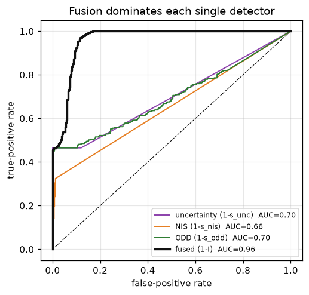

Goal. Turn the three trust signals - epistemic uncertainty (notebook 04), the
model-based NIS (notebook 05), and operating-domain membership - into a single,
decision-relevant integrity scoreI\in[0,1]. We treat the signals as
complementary detectors, fuse them with a rule that is safe by construction, and
measure the result with ROC and detection-delay analysis.
The operational design domain (ODD) is the set of conditions a system was
designed and validated for [1,2]. Formally it is a set \mathcal D in condition
space, and monitoring is a membership test c_k\in\mathcal D:
Leaving \mathcal D is a form of novelty / anomaly detection [9]: the input is
unlike the design population. Two subtleties matter. First, the conditions c_k are
not known exactly - they are estimated from the image (the pixel features of
notebook 03), so the test must cope with uncertain measurements [3]. Second, a
hard indicator \mathbb 1[c\in\mathcal D] chatters at the boundary; we prefer a
soft margin. For each guard define a signed normalised margin (positive = inside)
and pass the worst one through a logistic:
The shapes are deliberate. s_{unc} and s_{NIS} use exponential decays so a
score behaves like a soft likelihood that falls off as the statistic worsens;
s_{NIS} only reacts to the excess above its chi-squared threshold, so a
consistent filter scores \approx 1. Each detector is sensitive to a different
failure mode, which is the whole reason to fuse them.
How should three trust scores combine into one? Read each s_i as a soft estimate
of P(\text{trustworthy}\mid \text{signal}_i). Under a naive-Bayes assumption
(signals conditionally independent given trust), the combined posterior evidence
multiplies - the log-scores add. This is the product rule for combining
classifiers [4,5]:
The product implements a logical AND / independent veto: every detector must be
happy for I to be high, and any one collapsing to 0 vetoes trust. That is the
safe choice - a fail-operational system should distrust the perception if any
credible signal says so. Contrast the average \tfrac13\sum_i s_i, which lets two
happy detectors mask one that has detected a real fault. We finally low-pass the
score to avoid chatter, a first-order recursion (EMA) with smoothing \beta:
I_k=(1-\beta)\,I_{k-1}+\beta\,I_{raw,k}.
(The independence assumption is only approximate - blur, say, raises both s_{unc}
and s_{ODD} - so the product is a conservative, well-behaved heuristic rather than
an exact posterior.)
At (s1, s2) = (0.1, 0.9): product = 0.09 (veto) , average = 0.50 (would pass)
4. Does fusion actually help? ROC and detection delay
To evaluate detectors we need ground truth. We build a scenario with two
different faults, and label each instant "untrustworthy" when a fault is present:
a blur episode (heavy defocus): raises the perception uncertainty, and is
visible in the pixel features, so s_{unc} and s_{ODD} should catch it - but the
filter's R grows honestly with the noise, so the NIS stays quiet;
an unmonitored perception bias (a sensor glitch / novel object, with the
conditions looking perfectly normal): invisible to the uncertainty and domain
monitors, but it makes the innovation inconsistent, so only the NIS catches it.
No single detector covers both. We compare them with a ROC curve (true- vs
false-positive rate as the alarm threshold sweeps) [6] and with detection delay
(time from fault onset to first alarm) [7].
def build_scenario(N=800, Ts=0.05, seed=0):
r = np.random.default_rng(seed)
L, V = 2.7, 15.0
A = np.array([[1, V*Ts], [0, 1.]]); C = np.eye(2); Qk = np.diag([1e-4, 1e-4])
x = np.zeros(2); xhat = np.zeros(2); P = np.diag([0.05, 0.02])
base = np.array([0.02, 0.01])
S = {k: [] for k in ("s_unc", "s_nis", "s_odd", "I", "label")}
def ramp(t, a, b, lo, hi): return lo if t<=a else hi if t>=b else lo+(hi-lo)*(t-a)/(b-a)
Iprev = 1.0
for k in range(N):
t = k*Ts
blur = ramp(t, 8, 11, 0, 2.6) if t < 14 else ramp(t, 16, 18, 2.6, 0) # blur fault 8..18
bright = 1 - 0.4*blur/2.6
bias_on = 24 <= t < 32 # unmonitored bias fault
srep = base*(1 + 2.5*blur)*(1 + 1.5*max(0, 1 - bright)) # honest noise level
x = A @ x + r.multivariate_normal([0, 0], Qk) # true dynamics (u = 0)
bias = np.array([0.20, 0.05]) if bias_on else np.zeros(2)
y = C @ x + bias + r.normal(0, srep)
# Kalman filter with honest claimed R = diag(srep^2)
xp = A @ xhat; Pp = A @ P @ A.T + Qk
nu = y - xp; Sn = Pp + np.diag(srep**2); nis = float(nu @ np.linalg.solve(Sn, nu))
Kg = Pp @ np.linalg.inv(Sn); xhat = xp + Kg @ nu; P = (np.eye(2) - Kg) @ Pp
# measured (noisy) pixel conditions for the ODD monitor
blur_m = max(0, blur + r.normal(0, 0.15)); bright_m = np.clip(bright + r.normal(0, 0.05), 0, 1)
margin = min((bright_m - 0.45)/0.55, 1 - blur_m/1.6) # pixel-only ODD guards
su, sn, so = s_unc((srep**2).sum()), s_nis(nis), s_odd(margin)
Iraw = su*sn*so; Iprev = 0.6*Iprev + 0.4*Iraw
for key, val in zip(("s_unc","s_nis","s_odd","I"), (su, sn, so, Iprev)): S[key].append(val)
S["label"].append((blur > 1.6) or bias_on) # ground-truth "untrustworthy"
return {k: np.array(v) for k, v in S.items()}, Ts
def roc(score, label):
thr = np.r_[np.inf, np.sort(np.unique(score))[::-1], -np.inf]
P, Ng = label.sum(), (~label).sum()
tpr = np.array([((score >= t) & label).sum()/max(P, 1) for t in thr])
fpr = np.array([((score >= t) & ~label).sum()/max(Ng, 1) for t in thr])
auc = float(np.sum(np.diff(fpr) * (tpr[:-1] + tpr[1:]) / 2.0)) # trapezoid (numpy-version safe)
return fpr, tpr, auc
sc, Ts = build_scenario()
label = sc["label"].astype(bool)
detectors = {"uncertainty (1-s_unc)": 1 - sc["s_unc"], "NIS (1-s_nis)": 1 - sc["s_nis"],
"ODD (1-s_odd)": 1 - sc["s_odd"], "fused (1-I)": 1 - sc["I"]}
colors = {"uncertainty (1-s_unc)": "#8e44ad", "NIS (1-s_nis)": "#e67e22",
"ODD (1-s_odd)": "#2e7d32", "fused (1-I)": "#111"}
plt.figure(figsize=(4.8, 4.6)); plt.plot([0,1],[0,1],'k--',lw=.7)
for name, score in detectors.items():
fpr, tpr, auc = roc(score, label)
plt.plot(fpr, tpr, color=colors[name], lw=(2.2 if "fused" in name else 1.3),
label="%s AUC=%.2f" % (name, auc))
plt.xlabel("false-positive rate"); plt.ylabel("true-positive rate")
plt.title("Fusion dominates each single detector"); plt.legend(fontsize=8, loc="lower right")
plt.grid(alpha=.3); plt.tight_layout(); plt.show()

# Detection delay: threshold at the 90th percentile of each detector's nominal score,
# and require a SUSTAINED alarm (5 consecutive samples) so a lone spike does not count.
def alarm_threshold(score, label, target_fpr=0.10):
return max(np.quantile(score[~label], 1 - target_fpr), 1e-3)
def first_delay(score, thr, window, hold=5):
idx = np.where(window)[0]; onset = idx[0]
fired = (score >= thr)
for i in idx:
if i + hold <= len(score) and fired[i:i+hold].all():
return (i - onset)*Ts
return None
blur_win = sc["label"] & (np.arange(len(label))*Ts < 20) # the blur-fault interval
bias_win = sc["label"] & (np.arange(len(label))*Ts >= 20) # the bias-fault interval
print("detector blur-fault delay bias-fault delay")
for name, score in detectors.items():
thr = alarm_threshold(score, label)
db = first_delay(score, thr, blur_win); dbi = first_delay(score, thr, bias_win)
fmt = lambda d: ("%.2f s" % d) if d is not None else " MISSED"
print("%-18s %14s %14s" % (name.split(' ')[0], fmt(db), fmt(dbi)))
detector blur-fault delay bias-fault delay
uncertainty 0.00 s MISSED
NIS MISSED 1.75 s
ODD 0.00 s MISSED
fused 0.00 s 0.30 s
The ROC and the delay table make the argument quantitatively: the uncertainty and
ODD monitors catch the blur fault but miss the unmonitored bias; the NIS catches
the bias but is (correctly) quiet during the honest-noise blur; and the fused score
catches both, with the highest AUC. This is exactly why the deployed system
(notebook 08) fuses all three rather than trusting any single signal - and why the
model-based NIS is indispensable for the failures the condition monitors cannot see.
5. Where this goes next
The integrity score is the single number the controller acts on. In notebook 07 it
sets the authority shared between automation and driver, \lambda=\Phi(I,W), and
contracts the operating envelope, v_{ref}=v_{nom}(0.4+0.6\,I). Because I is
smooth and vetoed by the weakest detector, that hand-off is graceful rather than a
hard switch.
Exercises
Replace the product with a noisy-OR on the alarms, 1-\prod_i(1-a_i), and
compare its ROC to the product-of-trust rule. When would you prefer each?
Add a third fault type - low brightness at night - and check which detectors
cover it. Does the fused AUC stay highest?
The independence assumption is false when blur raises both s_{unc} and
s_{ODD}. Estimate their correlation on the scenario; does double-counting make
the product too conservative?
Tune the EMA \beta: plot detection delay vs false-alarm rate as \beta varies.
This is the responsiveness-vs-robustness trade you will meet again with CUSUM
(notebook 09).
References
SAE International. Taxonomy and Definitions for Terms Related to Driving Automation Systems for On-Road Motor Vehicles. Standard J3016_202104, 2021. (Operational design domain.)
P. Koopman, F. Fratrik. How Many Operational Design Domains, Objects, and Events? SafeAI Workshop, AAAI, 2019.
T. Charmet, V. Berge-Cherfaoui, J. Guzman, A. Armand. Operational Design Domain Monitoring with Uncertain Measurements. IEEE ITSC, 2024. doi:10.1109/ITSC58415.2024.10919733
J. Kittler, M. Hatef, R. P. W. Duin, J. Matas. On Combining Classifiers. IEEE Transactions on Pattern Analysis and Machine Intelligence, 20(3):226-239, 1998. doi:10.1109/34.667881 (Product vs sum fusion rules.)
D. L. Hall, J. Llinas. An Introduction to Multisensor Data Fusion. Proceedings of the IEEE, 85(1):6-23, 1997. doi:10.1109/5.554205
M. Basseville, I. V. Nikiforov. Detection of Abrupt Changes: Theory and Application. Prentice Hall, 1993. (Detection delay and change detection.)
P. Antonante, H. Nilsen, L. Carlone. Monitoring of Perception Systems: Deterministic, Probabilistic, and Learning-based Fault Detection and Identification. Artificial Intelligence, 2022. arXiv:2205.10906
V. Chandola, A. Banerjee, V. Kumar. Anomaly Detection: A Survey. ACM Computing Surveys, 41(3):1-58, 2009. doi:10.1145/1541880.1541882